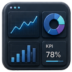

BUSINESS INTELLIGENCE · PROYECTO 13
Proyecto 05 · Dashboard BI
Dashboard con Looker Studio · Taxi Trips Chicago
Dashboard interactivo en Looker Studio para explorar viajes de taxi en Chicago, indicadores operativos, patrones horarios y recorridos pickup-dropoff.

CONTEXTO Y OBJETIVO
Diseñar una vista interactiva para explorar el comportamiento de los viajes reportados de taxi en Chicago desde indicadores operativos y patrones de recorrido.
DATOS Y DIAGNÓSTICO
- Uso de una base procesada y preparada para consumo analítico.
- Construcción de métricas resumidas, segmentaciones temporales y cortes territoriales.
- Diseño de visuales interactivos para facilitar exploración, comparación y lectura ejecutiva.
ENTREGA Y APRENDIZAJE
La entrega convierte el análisis en un dashboard navegable, pensado para revisar señales operativas sin recorrer notebook o código.